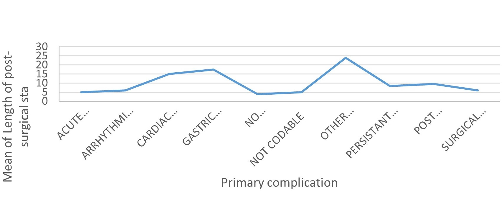
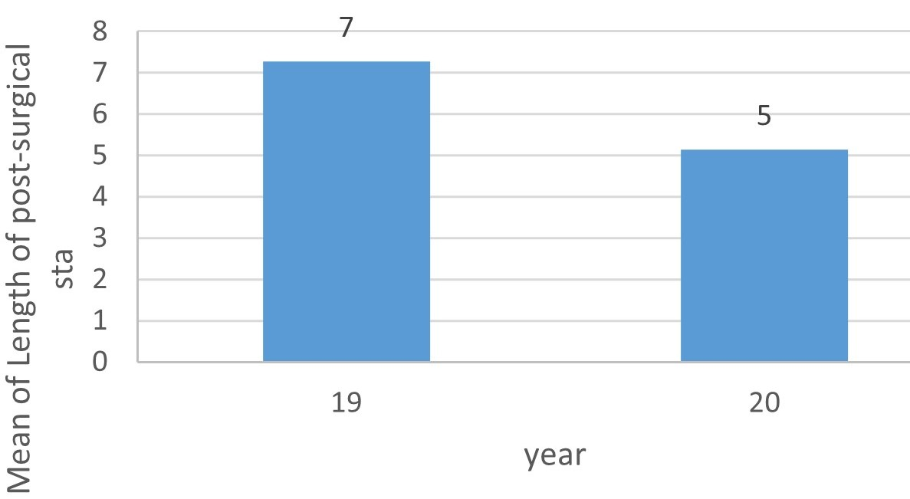
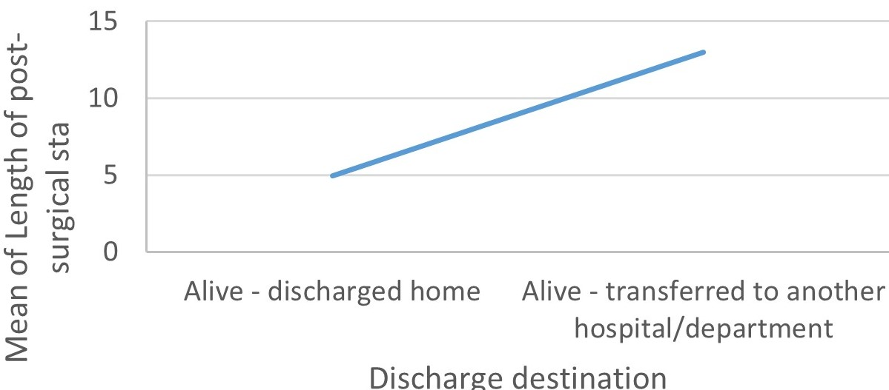
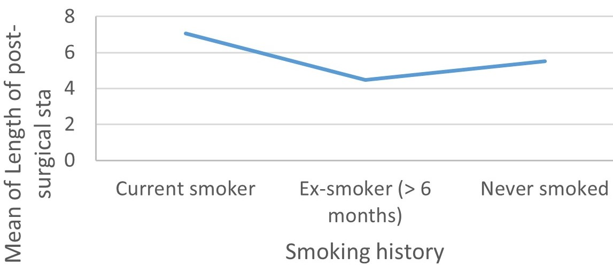

Maintaining Standards of Care in Thoracic Surgery During the Covid-19 Pandemic in London: A Multi-site Report
Evauating care outcomes following thoracic surgery practice during the COVID-19 pandemic
How does the COVID-19 pandemic affect the clinical course of disease and outcomes of surgical care in lobectomy patients?
There were no mortality cases in the study population, with only two patients transferred to another hospital for further specialized care.
By establishing and maintaining the protocols of standard care during the COVID-19 pandemic for thoracic surgery patients, the mortality rate can be reduced to zero.
Methods
This retrospective study is assessing lung resections performed during the period of March – September 2020. A thoracic surgery protocol was implemented, which included telephone/video initial consultation, pre-habilitation for high-risk patients, virtual pre-assessment followed by a day of surgery admission. Data was collected through the patient assessment and tracking system.
Results
A total of 214 patients underwent lung resection, of which 99 patients had a lobectomy. The mean age was 64.4 (10-87), and 57 were females. The mean thoracoscope was 1.66 (0.06 – 9.5), mean length of stay was 5.5 days (1-24). There was no recorded mortality during this period. Seven patients had post-operative complications, including pneumonia, respiratory failure requiring ventilatory support in the intensive care unit, and one completion pneumonectomy. Most importantly, none of the patients developed COVID-19 infection post-operatively.
Conclusion
A total of 214 patients underwent lung resection, of which 99 patients had a lobectomy. The mean age was 64.4 (10-87), and 57 were females. The mean thoracoscope was 1.66 (0.06 – 9.5), mean length of stay was 5.5 days (1-24). There was no recorded mortality during this period. Seven patients had post-operative complications, including pneumonia, respiratory failure requiring ventilatory support in the intensive care unit, and one completion pneumonectomy. Most importantly, none of the patients developed COVID-19 infection post-operatively.
INTRODUCTION
As of January 2021, the World Health Organization (WHO) estimated the total number of COVID-19 infection cases as over 98 million globally. Up to the date of this review, the last weekly epidemiological report declared the total number of global death rates are over 2 million since the start of the pandemic [1]. Announcing COVID-19 as a pandemic by the WHO in March 2020, the Coronavirus disease has significantly reshaped life and daily living around every corner of the world.
Its impact on the medical practice and surgical management have been most devastating. Although the race for a treatment protocol and vaccine started earlier, healthcare providers globally felt the crushing blow of this novel viral infection. No doubt, the health dangers of delayed surgical procedures are well-defined.
As the reported cases of daily infection surged significantly, the need to develop and measure the variables that directly measures the impacts of COVID-19 infections on clinical procedures also developed. The data and evidence gathered from such measures were projected to guide updated reviews of medical practices as the pandemic rages on (2).
In health facilities with active cases of COVID-19, physicians were forced to update treatment protocols and closely monitor parameters such as drug effectiveness, surgical outcomes, and disease resolution index (3). Research teams worked in different healthcare facilities, including a COVID-19 Centre, studying the clinical outcomes of thoracic surgery in the pandemic
Our goal, with this research, is to evaluate the clinical outcomes following elective thoracic surgery –Lobectomies – in a participant pool of 93 patients during the COVID-19 pandemic in non-COVID-19 and a COVID-19 center.
METHODOLOGY
This retrospective study is assessing lung resections during the period of March – September 2020. A COVID-19 based thoracic surgery protocol was implemented, which included telephone/video initial consultation, pre-rehabilitation for high-risk patients, virtual pre-assessment followed by a day of surgery admission. Data was collected through the patient assessment and tracking system.
RESULTS
A total of 214 patients underwent lung resection, of which 99 patients had lobectomy [Table 1]. The mean age was 64.4 (10-87), and 54 were females. The mean thoracoscope was 1.66 (0.06 – 9.5), mean length of stay was 5.5 days (1-24) [Table 2].
| Gender | N | Mean | Median | Std. Deviation | Range |
|---|---|---|---|---|---|
| Female | 54 | 5.11 | 4.00 | 4.360 | 23 |
| Male | 39 | 5.54 | 5.00 | 4.103 | 22 |
| Total | 93 | 5.29 | 4.00 | 4.236 | 23 |
hjeyeded
| Age at Admision | N | Mean | Median | Col5 | Col6 |
|---|---|---|---|---|---|
There was no recorded mortality during this period. Seven patients had post-operative complications, including pneumonia, respiratory failure requiring ventilatory support in the intensive care unit, and one completion pneumonectomy (Table 2-3). None of the patients developed COVID-19 infection post-operatively.

When compared with our pre-COVID data for the same time period in 2019, these results are comparable in terms of mortality, morbidity, and length of stay [Table 3].

We used Pando (mobile app) and Microsoft teams to ensure closer communication between members of the multidisciplinary team. During this time, our junior staff was co-opted to work on intensive care, while we were also providing thoracic support to the ECMO and ITU teams, and we were also sharing theatre lists with other units from across London.


DISCUSSION
Many research studies have highlighted the post-operative risks and outcome impacts of COVID-19 on patients undergoing surgical procedures, , while others have directly documented the morbidity scores of delayed surgical resection (4). Ahmed et al. [5] carefully recommended the protocols for disinfection and surgical maneuvers for anesthesiologists and surgeons performing thoracic surgery on a patient. The general index for post-operative pulmonary complications is low; however, the presence of comorbidities and viral infections can affect the diagnostic workup and surgical outcome. With reference to an earlier report [6] confirming that undiagnosed cases of COVID-19 infection may complicate post-operative recovery. Ahmed et al. also defined the modalities for post-operative care and elective ICU admissions in surgical cases with a suspected or confirmed COVID-19 infection.
At the time of compiling these results, the team was not aware of any similar reports exactly detailing the outcome of elective lung lobectomies during the COVID-19 pandemic. This report, to the best of our knowledge, is the first of its kind globally, reconciling the parameters defining standardized patient care with the outcomes of elective surgery as affected by COVID-19 infection. Although, there are studies proposing new ideas on emergency thoracic surgery patient care irrespective of COVID-19 (7) On admission, preoperative history of comorbidities and at-risk behaviors were documented for every patient.
At the time of research reporting, our team was unaware of any large-scale cohort studies statistically evaluating the post-operative risks and complications of lobectomies associated with a COVID-19 infection. The only relevant studies, in this case, were published by Lei et al. [8]. Lei’s team reports statistical data on the outcomes and clinical characteristics as observed in 34 surgical cases in Wuhan City, Hubei Province, China. Three high-mortality thoracic surgery cases were captured; however, the majority of the surgical cases were on oncological surgeries with no patient confirmed of an active COVID-19 infection prior to surgery. The data from Wuhan suggested that the percentage of patients requiring post-operative critical care (44.1%) was higher than the general population of patients on admission with COVID-19-related health complications.
Limited by lockdown protocols of the pandemic, our team decided to incorporate telemedicine into the standardized care plan drafted for these patients [9]. As a safe and modern method of remote healthcare delivery, the study population was introduced to Microsoft tams and Pando –a mobile app –for pre-and post-surgical monitoring. The procedures and schedule for communication and feedback analysis from these platforms followed early protocols in remote healthcare delivery for surgical cases. Robert et al. [10] earlier described the safety and efficiency of telemedicine in delivering preoperative and post-operative clinical care to patients scheduled for thoracic surgery. The submissions of this early research explained how the authors confirmed that telemedicine safely determines oncologic surgical resectability and patient fitness and providing outstanding outcomes in surgical care.
Our team is aware of an earlier study exploring the prevalence of smoking rate and comorbidities in evaluating the relationship between disease severity and mortality during the COVID-19 pandemic. Tayfun and Bengu [11] concluded in this study that smoking, cardiac disease, congestive pulmonary diseases, and old age are risk factors for intensive care admission and mortality in COVID-19 patients. The comorbidities and at-risk behaviors documented in our study pool include smoking [13 current smokers, 54 ex-smokers], renal failure [13], steroid therapy [4], and diabetes [2 diets controlled, 1 insulin-dependent, 10 oral therapy, and diet controlled].
Although the lobectomies captured in this report were elective, patient care was directed at providing efficient clinical care in line with COVID-19 protocol guidance for triage of operations for thoracic malignancies [12]. It is important to emphasize the integration of telemedicine using the Pando mobile app to deliver medical care during this study. We believe that the zero morbidity rate recorded during this study is in part aided by utilizing technology in the postoperative and preoperative setting for patient evaluation and to triage any potential complications (13). The mean length of post-surgical hospital stay recorded was also compared with pre-COVID data for the same period (March – September) in 2019. We had a significant reduction in the mean length of post-surgical hospital stay, with the 2020 value pegged at 5 as against the higher 2019 value at 7.
Of the 93 patients observed during this study, 72 developed no primary complications, with the remaining 21 patients developing various primary complications ranging from acute post-surgical troublesome pain, arrhythmia, cardiac arrest, mild gastric dilatation, persistent air leak, surgical emphysema, post-operative pneumonia, and other acute abdominal conditions requiring laparotomy. We recorded and analyzed the relationship between these complications and other variables of this study, including the mean of length of post-surgical hospital stay. The group of patients that developed other acute abdominal conditions requiring laparotomy as a primary complication stayed the longest in the hospital at a mean length of post-surgical stay of 5 days.
Post-operative secondary complications diagnosed in the study cases were also documented. Eighty-nine patients developed no secondary complications as supportive care for primary complications were swiftly initiated. However, one patient developed mild arrhythmia requiring no treatment other than drugs, one patient developed atelectasis (collapse), another was diagnosed with persistent air leak, and the last patient developed a case of pleural effusion of an unknown cause. We recorded no case of tertiary complications. Therapy was considered largely successful as all members of the ninety-three patient pool were discharged with no recorded of mortality.
The discharged destinations were different for our patients, with two patients alive and transferred to another hospital/department and ninety-one patients discharged home. None of the patients contracted the COVID-19 post-operatively and during the entire stay in the hospital. In an earlier report conducted on patients with a laboratory-confirmed COVID-19 in 552 hospitals in China, the overall incubation time was pegged at 4.0 days (interquartile range 2 – 7). Our study cases stayed for more than the confirmed incubation periods and recorded no suspicious symptoms suggestive of a COVID-19 infection. Post-operative care is expected to continue with the already established COVID-19 protocol guidance for the triage of thoracic malignancy operations (14).
CONCLUSION
Our study shows that through the implementation of a COVID-19 based thoracic protocol, we were able to maintain a high standard of care during the COVID-19 pandemic with no mortality and low morbidity. We achieved this feat despite working across three different COVID-19 centers. Our junior staff was actively involved in patient care protocols as they were drafted to cover the intensive care unit at these sites. Our result findings resonate with earlier submissions on the outcomes of researches earlier conducted to evaluate the safety of patients and providers in lung cancer surgery during the COVID-19 pandemic (15). Effective communication using teams and Pando allowed us to deliver safe patient care.